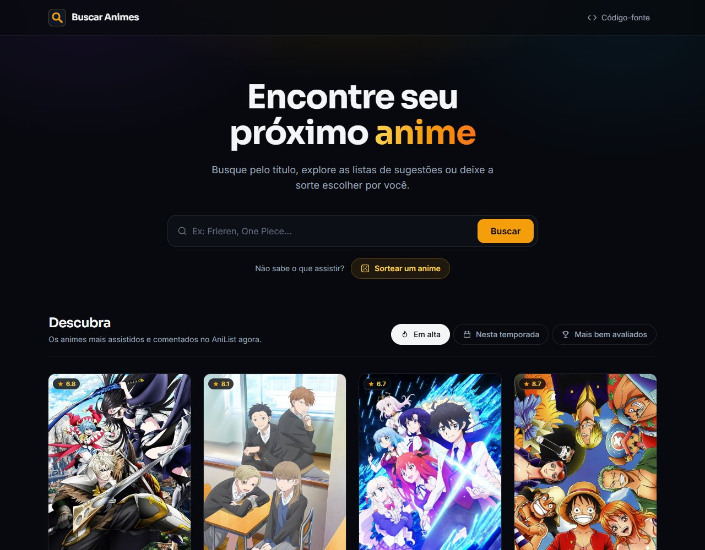
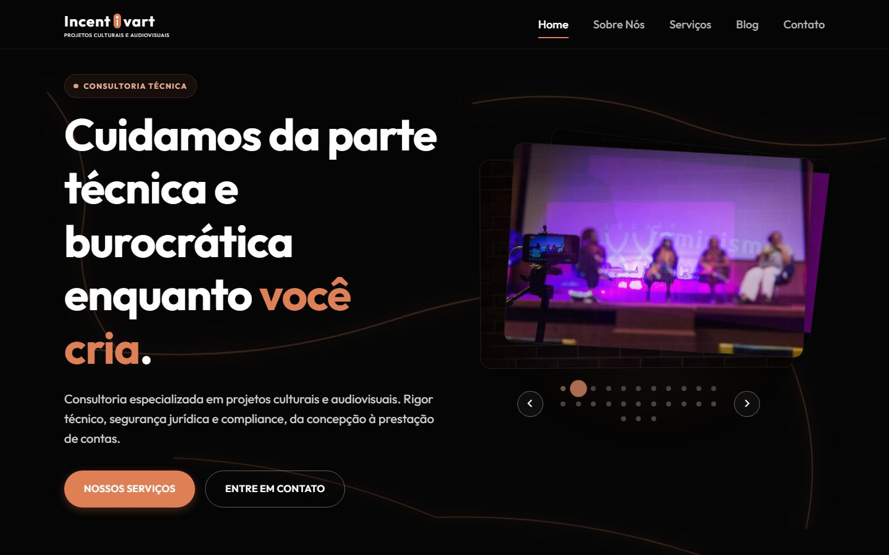
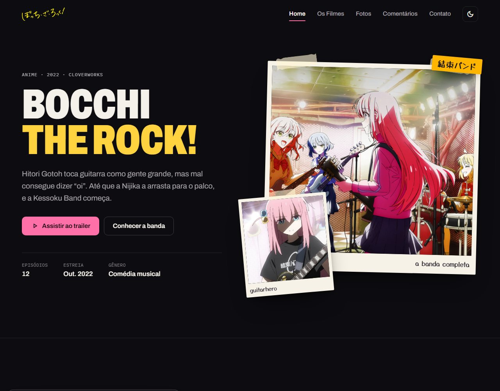
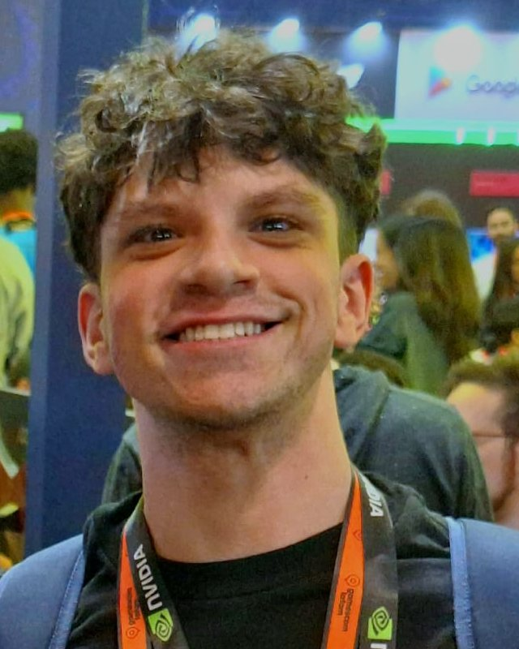

Buscar Animes: ler estudo de caso
Busca, listas de sugestões e sorteio de animes com dados da API do AniList. Do exercício de 2024 à versão em React com testes automatizados.
Aberto a estágio · Rio de Janeiro, RJ
Estudo Ciência da Computação na UVA e gosto de trabalhar no ponto em que o design vira código: desenhar a interface, entender o porquê de cada decisão e construir o resultado no navegador. Busco oportunidades em UI/UX Design e Front-End, com o objetivo de atuar em Design Engineering.
Trabalhos selecionados
Uma seleção de projetos de interface e front-end. Em cada um, explore o objetivo, as decisões, a minha participação e o estado atual.

Busca, listas de sugestões e sorteio de animes com dados da API do AniList. Do exercício de 2024 à versão em React com testes automatizados.

Site de uma empresa que cuida da parte burocrática de projetos culturais e audiovisuais. Fiz o UI/UX e parte do front-end, em dupla com Bruno Scalercio.

Redesign de UI/UX e refatoração de um site de fã: identidade inspirada em flyers de show, tokens CSS e componentes acessíveis em JavaScript puro.
Meu TCC em grupo: um jogo de terror na Unreal Engine. Cuido da ambientação, da história, do game design e de parte da jogabilidade.
Sou o Gabriel Rizzo, moro no Rio de Janeiro e estou terminando a graduação em Ciência da Computação na UVA. O que mais me interessa é o caminho entre a ideia de uma tela e a versão que funciona de verdade no navegador.
Na prática, desenho telas no Figma, escolho cores, tipografia e componentes e depois construo a interface com HTML, CSS e JavaScript (nos projetos mais recentes, com React e TypeScript). Também trabalho com imagem e vídeo no Photoshop e no Premiere Pro.
Alguns estudos de caso já mostram o arquivo do Figma ao lado do site publicado. Os outros vão ganhar o mesmo registro conforme eu organizo o material.
Desenho telas pensando em hierarquia, tipografia, cor e nos estados da interface: carregamento, erro e vazio.
Nos projetos Incentivart · Bocchi The Rock!
Construo interfaces responsivas e acessíveis com HTML, CSS e JavaScript e, nos projetos recentes, com React e TypeScript.
Nos projetos Buscar Animes · Bocchi The Rock!
A ponte entre os dois: decisões de design guardadas em tokens, componentes reutilizáveis e cuidado para que a interface implementada continue fiel ao desenho.
Nos projetos Tokens CSS no Bocchi · Tokens no Buscar Animes
—
Incentivart · Freelance
UI/UX do site e parte do front-end, em dupla com Bruno Scalercio, que ficou principalmente com o back-end e com a maior parte do código. Projeto entregue.
Em andamento
Ciência da Computação · UVA · Projeto em grupo
Jogo de terror em desenvolvimento na Unreal Engine. Cuido da ambientação, da história, do game design e de parte da jogabilidade.
Previsão: dez. 2026
Universidade Veiga de Almeida (UVA) · Rio de Janeiro
Conclusão prevista para dezembro de 2026.
Competências
O que uso em design e desenvolvimento, agrupado por área. Quando a ferramenta aparece em um estudo de caso, o nome do projeto vem junto.
Uso IA como apoio para planejar, revisar e otimizar tarefas. Os resultados sempre passam pela minha revisão.

Contato
Estou em busca de estágio ou trabalho em UI/UX Design, Front-End e Design Engineering. Pode me chamar por e-mail ou pelo LinkedIn.